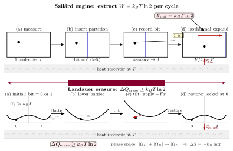

Maxwell 妖与 Landauer 原理 — 删 1 比特要花 $k_BT\ln 2$ 焦耳?
热力学里最让人不安的思想实验大概就是 Maxwell 1867 年那封给朋友 Tait 的信里提到的那只小妖. 把一个装满气体的盒子用隔板分成两半, 隔板上开一个小门, 门边坐一个小妖, 它看见快分子从左边过来就打开门让它进右边, 慢分子从右边过来就打开门让它进左边. 一段时间以后, 左冷右热, 温差出现了, 你在门之间接一台热机就能持续做功. 这只妖好像凭空违反了第二定律.
麻烦的是: 它到底哪里错了? 妖看一眼分子速度然后动一下门, 每一步都不对气体做宏观功, 气体总能量也不变. 这个谜足足困扰了物理学界 115 年 — 直到 1982 年才被 Bennett 用一个很反直觉的答案关上: 问题不在妖"看", 而在妖"忘". 整个过程里真正不可逆的一步, 是妖把上一次测量的结果从记忆里清除掉, 好腾出空间记下下一个分子. 那一次擦除, 至少要耗散 $k_BT\ln 2$ 的热 — 这就是 Landauer 原理. 本节要把这两件事严格推一遍.
一、Szilárd 1929: 一个分子能榨出多少功?
把 Maxwell 妖的故事简化到不能再简化, 就是 Szilárd 1929 年设计的单分子引擎. 一个体积为 $V$ 的盒子里有一个分子, 和温度为 $T$ 的热库接触. 执行如下循环:
Step 1 (测量) 妖从外面看一眼, 确认分子在左半还是右半. 这条信息就是 1 比特 — 左记为 $0$, 右记为 $1$.
Step 2 (插板) 从盒子正中间插入一块可动档板, 把盒子分成两半. 因为只有一个分子, 档板所受的一侧压力不等于另一侧 — 分子所在那一半压力正比于 $k_BT/(V/2)$, 另一侧为零.
Step 3 (等温膨胀) 让档板在压力下缓慢移动到远端, 同时从热库吸热维持温度不变. 这就是一个单分子气体的等温膨胀, 体积从 $V/2$ 变到 $V$. 做功
$$ W = \int_{V/2}^{V} \frac{k_B T}{V'} dV' = k_B T \ln 2. \tag{1} $$
Step 4 (复位) 取走档板, 回到初始状态, 循环结束.
从外面看, 妖从一个温度均一的热库里提出了 $W = k_BT\ln 2$ 的功, 气体状态没变, 内能没变 — 这正是 Kelvin 表述禁止的"单一热源做功"的形式. 第二定律好像又死了一次.
但是注意: 第 1 步里妖必须"知道"分子在哪一边才能决定朝哪个方向推档板 — 如果随机推, 平均做功就是零. 这一"知道"是 1 bit 信息. Szilárd 的洞见是: 这 1 bit 必须记录在某个物理的存储器上, 这个存储器从循环开始到结束不是原地复原的 — 开始时它是空白 (某个"复位"态), 测量之后它记了 0 或 1 之一. 要把它循环回空白, 必须付出代价. 真正的循环不能只算工作气体, 还得把存储器算进来. 多少代价? 下面就要严格算清楚.
二、严格 deepdive: Landauer 1961 的双井模型
Landauer 1961 的原命题是这样一句话: 在温度 $T$ 的恒温浴中, 逻辑上不可逆的操作 (例如擦除 1 比特信息) 至少要耗散 $k_BT\ln 2$ 的热到环境. 这句话容易被当作口号反复念而不被真正推一遍. 它的严格推导其实只需要一个非常具体的物理模型, 我们这就从头过一遍.
考虑一个一维势能曲线 $U(x)$, 有两个对称的极小, 一个在 $x = -a$ (称为左井, 对应逻辑态 $0$), 一个在 $x = +a$ (右井, $1$), 中间被一个高度 $U_b$ 的势垒隔开, $U_b \gg k_BT$. 一个布朗粒子在这个势里, 与温度 $T$ 的热库耦合. 因为势垒远高于 $k_BT$, 粒子实际上被困在某一井中, 逃逸速率按 Arrhenius (上一节) 指数小, 可忽略. 这个装置存储 1 比特: $0$ 或 $1$.
现在开始"擦除"操作. 擦除的定义是: 不管粒子初始在哪个井, 操作结束后它一定在左井 ($0$). 这是逻辑上不可逆的 — 因为输出恒为 $0$, 看到输出 $0$ 你没法反推出输入是 $0$ 还是 $1$. 一个标准的物理实现是三步:
(a) 抹平势垒: 慢慢把中间的势垒 $U_b$ 降到零, 双井变成一个大单井, 粒子自由地在整个 $[-a, +a]$ 里漫游. 这一步无论粒子原来在哪边都一样做, 是信息无关的.
(b) 倾斜势: 慢慢加一个线性势 $-F x$ (一个小的"推力"), 把粒子从中央赶到左侧.
(c) 恢复势垒: 再把势垒慢慢抬回 $U_b$, 把 $F$ 撤掉, 粒子就被锁在左井了.
操作结束, 粒子必在左井 — 比特被擦除为 $0$. 好. 现在来算熵.
相空间视角. 操作开始时, 粒子要么在左井, 要么在右井. 这两个状态对应相空间中两个不相交的可用区域 $\Omega_L$ 和 $\Omega_R$, 每一个都是一个小盒子 (深度 $k_BT$ 级的井). 如果我们不知道比特是 $0$ 还是 $1$, 那系统的宏观态 (ensemble) 就是"要么在 $\Omega_L$ 要么在 $\Omega_R$ 各 50% 概率", 其可用相空间体积是 $|\Omega_L| + |\Omega_R| = 2|\Omega_L|$ (两井对称).
操作结束时, 粒子必在左井, 可用相空间变成了只有 $\Omega_L$, 体积为 $|\Omega_L|$. 相空间体积减半了. 对应 Gibbs 熵
$$ \Delta S_{\text{系统}} = k_B \ln \frac{|\Omega_L|}{2|\Omega_L|} = -k_B \ln 2. \tag{2} $$
系统的熵减少了 $k_B \ln 2$. 整个宇宙 (系统 + 热库) 的熵不能减少, 故热库必然获得至少 $k_B \ln 2$ 的熵, 而热库温度为 $T$, 这意味着热库获得至少 $Q = T \cdot k_B \ln 2 = k_BT\ln 2$ 的热. 这些热是从哪里来的? — 只能是外界驱动势能场的 agent (操作者) 所做的功转化而来.
换句话说, 操作者对双井系统做的功 $W$ 必须满足
$$ W \ge k_B T \ln 2. $$
这就是 Landauer 原理. 这里没有一句挥手: $-k_B\ln 2$ 的熵差就是"相空间从两份合并到一份"的 Boltzmann $S = k\ln \Omega$; 不等号来自第二定律; 于是擦除的最小代价出现了.
关键是看清楚: 不可逆不在于"降势垒"或"抬势垒"这些具体动作 — 这些动作只要做得足够慢都是可逆的 (准静态); 不可逆在于"不管输入是什么, 输出都是 $0$"这条逻辑映射本身 — 它把两个不同的初态映到同一个末态, 相空间只能塌缩, 不能还原. 哪怕你把每一步物理操作做成绝热可逆, 这张多对一的映射也依然让过程整体不可逆.

三、Bennett 1982: 妖的账是怎么平的
把 Szilárd 引擎和 Landauer 原理拼起来, Bennett 1982 给出了 Maxwell 妖问题的干净解法.
妖要让循环跑下去, 必须在每轮做完之后回到同一个初始状态 — 包括它自己的记忆. 每轮里, 它用 $W_{\text{out}} = k_BT\ln 2$ 从气体中提出了功 (Szilárd 那一步); 但这 1 bit 测量结果记在了它的记忆里, 下一轮开始之前必须抹掉. 擦除那 1 bit 至少要付出 $Q_{\text{erase}} \ge k_BT\ln 2$ 的热 (Landauer 那一步), 这热从外界做的功变过来. 也就是说, 妖必须给自己的记忆擦除机制输入功 $W_{\text{in}} \ge k_BT\ln 2$.
净功
$$ W_{\text{net}} = W_{\text{out}} - W_{\text{in}} \le 0. $$
循环里根本没正功产生 — 甚至在最好的情形下只能恰好打平. 第二定律没被违反. 妖不是骗子, 只是它以前被偷偷豁免了记忆的物理代价. 一旦把记忆算进来, 账就平了.
更深地看, Bennett 的澄清改了个视角上的关键: 早期 Brillouin 1951 等人以为问题出在"测量"本身必须耗散热 — 妖要用光照一下分子才能看见它, 光子传递信息同时把能量掉给了气体. 但 Bennett 证明, 测量这一步原则上可以做成完全可逆的 (热力学代价可以任意小). 真正锁死不可逆的是擦除 — 测量把两种可能输入变成两种可能输出, 是一对一, 可逆; 擦除把两种可能输入变成一种可能输出, 是二对一, 这张逻辑映射本身锁死了相空间塌缩, 就算物理实现做得再怎么慢都改变不了. 所以 Landauer 说的是 逻辑不可逆 ⇒ 热力学不可逆.
再换个角度: 信息论里 Shannon 熵 $H = -\sum p_i \log p_i$ 和物理的 Gibbs 熵 $S = -k_B \sum p_i \ln p_i$ 只差一个换底常数 $k_B \ln 2$ (每比特). "$k_BT\ln 2$ 每比特"正是把这两套单位对齐后的能量单位: 1 bit 的信息熵 = $k_B \ln 2$ 的物理熵 = $k_BT\ln 2$ 的等效热能. 信息不是纯粹抽象的 — 它必须挂在某个物理载体上, 而物理载体有熵, 熵有能量代价.
四、数字估算与实验验证
室温 $k_BT\ln 2$ 的量级. 在 $T = 300$ K 下, $k_B = 1.381 \times 10^{-23}$ J/K, 所以
$$ k_B T \ln 2 = 1.381 \times 10^{-23} \times 300 \times 0.693 \approx 2.87 \times 10^{-21} \text{ J}. $$
换算成更熟悉的单位, 约为 $0.018$ eV, 或 $2.87$ zJ (zeptojoule). 这是一个非常小的能量 — 小到让任何工程师都会嫌它不值一提. 但它是个普适下限, 热力学不允许你低于它.
和现代 CPU 比较. 现代高端 CPU 在单次逻辑门翻转上大约耗散 $10^{-15}$ J (1 fJ) 左右 (不同工艺略有差异, 这是量级). 和 Landauer 极限比:
$$ \frac{10^{-15}}{2.87 \times 10^{-21}} \approx 3.5 \times 10^{5}. $$
也就是说, 当前硅 CMOS 的每比特擦除代价比 Landauer 极限高出约 5 个数量级. 往下还有巨大的空间 — 这是未来低功耗计算 (包括绝热计算和可逆计算) 的理论地板. 注意, 如果采用"可逆计算" (Bennett 和 Fredkin 1980 年代的路线), 原理上可以把擦除操作减到 0 — 只要你不扔掉中间结果. 但这会导致存储爆炸, 实践上还在摸索.
实验验证. Toyabe 等人 2010 年 (Nature Physics) 用一个被螺旋势束缚的微小珠子演示了 Szilárd 引擎: 测量珠子位置然后相应地旋转势阱, 从热浴中净提取了约 $k_BT\ln 2$ 的功, 符合公式 (1) 在百分量级内. Bérut 等人 2012 年 (Nature) 用一个光镊做的双井系统直接测量擦除 1 bit 时耗散的热, 画出了耗散随擦除速度的曲线, 在慢极限下逼近 $k_BT\ln 2$, 这是 Landauer 原理的第一次直接实验确认, 从提出到被测量整整 51 年.
极限检验: 绝热可逆 vs 不可逆. 读者可能会问: Landauer 原理里那个 "$\ge$" 什么时候取等号? 答: 当物理操作做到无穷慢 (准静态) 且是绝热可逆时. 具体到双井模型, 降势垒、倾斜、抬势垒每一步都要慢到局部 Boltzmann 分布随时跟得上 — 这是热力学可逆的条件. 快一点, 耗散就严格大于 $k_BT\ln 2$; 慢到极限, 恰等 $k_BT\ln 2$. 而如果拿一个压根不需要擦除的操作来看 — 比如一对一的 NOT 门 $0 \leftrightarrow 1$ — 它的逻辑映射是可逆的, 相空间没塌缩, 原理上可以做到零耗散. 这个对照把 Landauer 原理里"逻辑不可逆"这个条件暴露在阳光下.
历史. 时间线值得一记: Maxwell 1867 年在给 Tait 的信里第一次提出这只妖, 只是想论证第二定律是统计的而不是绝对的; Szilárd 1929 年把它简化成单分子引擎, 第一次把"信息"和"功"等价起来, 但对问题的源头分析并不彻底; Brillouin 1951 年用测量的光子代价给了一个不完整的答案; Landauer 1961 年在 IBM 的内部报告里 (后发表 IBM J. Res. Dev.) 提出擦除代价, 才抓到问题的核心; Bennett 1982 年把这套图像拼完整, 指出测量可逆、擦除不可逆, 正式关上了妖的棺材板. 从 Maxwell 到 Bennett 整整 115 年 — 思想实验被彻底解决的速度并不快.
小结
本节把 Maxwell 妖问题从思想实验一路推到了数字: 利用 1 bit 信息最多能榨出 $k_BT\ln 2$ 的功 (Szilárd), 但擦除 1 bit 最少要耗散 $k_BT\ln 2$ 的热 (Landauer), 两件事恰好对账, 第二定律在循环上严丝合缝. 信息从此正式走进了热力学 — 它不是抽象的数学, 而是相空间里实实在在的体积, 有熵、有能量代价. 这扇门一旦推开, 后面就是 Jarzynski 等式、涨落定理、乃至黑洞的 Bekenstein-Hawking 熵 — 第二定律在微观和极端引力极限下的样子. 下一节我们从一个令人不敢相信的恒等式 $\langle e^{-\beta W} \rangle = e^{-\beta \Delta F}$ 开始, 看看在无数次非平衡过程的统计里, 平衡自由能怎么奇迹般地浮出来.
▲